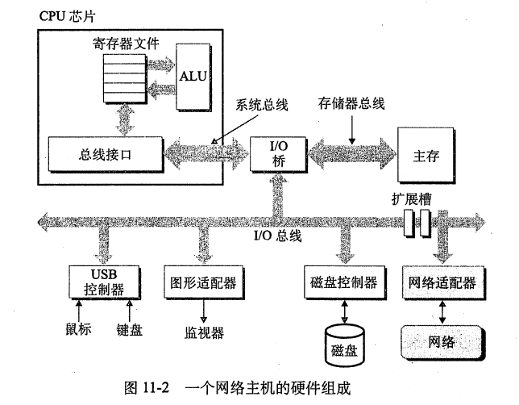
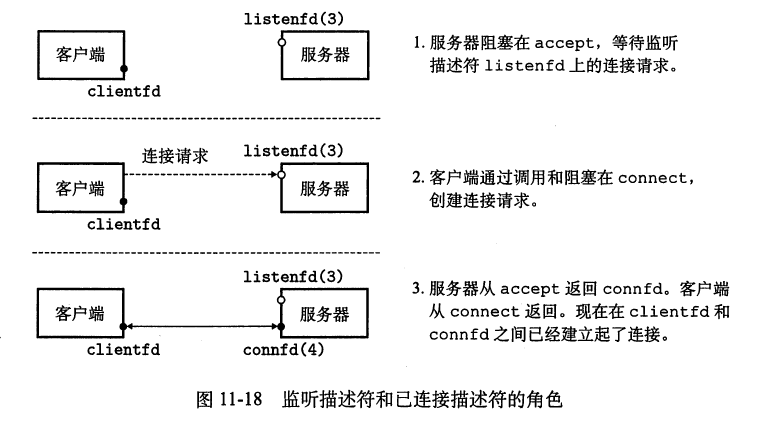

CSAPP_阅读笔记_11_网络编程
所有的网络应用程序都基于相同的基本编程模型，具有相似的整体逻辑结构，并且依赖于相同的编程接口.
网络应用依赖于很多在系统研究中已经学习过的概念，例如，进程、信号、字节顺序、存储器映射以及动态存储分配，都扮演着重要的角色。还有一些新概念要掌握。我们需要理解基本的客户端-服务器编程模型，以及如何编写使用因特网提供的服务的客户端-服务器程序。最后，我们将把所有这些概念结合起来，开发一个小的但功能齐全的 Web 服务器，能够为真实的 Web浏览器提供静态和动态的文本和图形内容。
1.客户端-服务器编程模型
每个网络应用都是基于客户端一服务器模型的（Client-Server Model）。采用这个模型，一个应用是由一个服务器进程和一个或者多个客户端进程组成。服务器管理某种资源，并且通过操作这种资源来为它的客户端提供某种服务。
客户端-服务器模型中的基本操作是**事务(transaction)**如下图所示：
一个客户端一服务器事务由四步组成:
- 当一个客户端需要服务时，它向服务器发送一个请求，发起一个事务。例如，当 Web 浏览器需要一个文件时，它就发送一个请求给 Web 服务器。
- 服务器收到请求后，解释它，并以适当的方式操作它的资源。例如，当 Web服务器收到浏览器发出的请求后，它就读一个磁盘文件。
- 服务器给客户端发送一个响应，并等待下一个请求。例如,Web 服务器将文件发送回客户端。
- 客户端收到响应并处理它。例如，当Web浏览器收到来自服务器的一页后，它就在屏幕上显示此页。
请注意，这里的客户端和服务器指的是进程而非机器或主机（Host）。单台主机能够同时运行多个不同的客户端和服务器，客户端和服务器事务也可以在相同或不同的主机上执行。
2.网络
对于一个主机而言，网络只是又一种 IO 设备，作为数据源和数据接收方，如下图所示：

一个插到 IO 总线扩展槽的适配器提供了到网络的物理接口。从网络上接收到的数据从适配器经过 IO和存储器总线拷贝到存储器，典型地是通过DMA传送，相似地，数据也能从存储器拷贝到网络。
网络是按地理邻近度组织的分层系统，其最低层是覆盖一个建筑物或校园的局域网（Local Area Network，LAN）。迄今为止最流行的局域网技术是以太网（Ethernet）：
一个以太网段(Ethernet segment)包括一些电缆(通常是双绞线)和一个叫做集线器的小盒
子，如下图所示：
以太网段的每根电缆一端连接到主机的适配器，而另一端则连接到集线器的一个端口上。集线器不加分辨地将从一个端口上收到的每个位复制到其他所有的端口上。因此，每台主机都能看到每个位。
每个以太网适配器都有一个全球唯一的48 位地址，它存储在这个适配器的非易失性存储器上。一台主机可以发送一段位，称为帧(frame)，到这个网段内其他任何主机。每个帧包括一些固定数量的**头部(header)**位，用来标识此帧的源和目的地址以及此帧的长度，此后紧随的就是数据位的有效载荷。每个主机适配器都能看到这个帧，但是只有目的主机实际读取它。
使用一些电缆和叫做网桥(bridge)的小盒子，多个以太网段可以连接成较大的局域网，称为桥接以太网(bridged Bthermet)，如下图所示：
桥接以太网能够跨越整个建筑物或者校区。在一个桥接以太网里，一些电缆连接网桥与网桥，而另外一些连接网桥和集线器。这些电缆的带宽可以是不同的。
为了简化局域网的表示，我们将把集线器和网桥以及连接它们的电缆画成一根水平线，如图所示：
在层次的更高级别中，多个不兼容的局域网可以通过叫做**路由器(router)**的特殊计算机连接起来，组成一个
internet(互联网络)。每台路由器对于它所连接到的每个网络都有一个适配器(端口)。路由器也能连接高速点到点电话连接，这是称为WAN(Wide-Area Network，广域网)：
互联网可以由使用完全不同且不兼容技术的局域网和广域网组成，这是它的一个关键特性。因此，我们必须在每台主机和路由器上运行协议软件（Protocol Software）来消除不同网络之间的差异。该软件实现的协议将管理主机和路由器如何协作以传输数据，它必须提供两个基本功能：
- 命名方案（Naming Scheme）：为主机地址定义统一的格式，并为每台主机分配至少一个唯一标识它的互联网地址；
- 交付机制（Delivery Mechanism）：定义一种统一的方式将数据位封装为若干个块，即数据包（Packet）。其大小和源/目的主机地址位于包的头部（Header），而源主机发送的数据位则在有效负载（Payload）之中。
下图展示了一个主机和路由器如何使用互联网络协议在不兼容的局域网间传送数据的示
例。这个互联网络示例由两个局域网通过一台路由器连接而成。

一个客户端运行在主机A上主机 A与LAN1相连，它发送了一串数据字节到运行在主机B上的服务器端，主机B则连接在LAN2上。这个过程包括8个基本步骤:
- 运行在主机 A上的客户端进行了一个系统调用，从客户端的虚拟地址空间拷贝数据到内核缓冲区中。
- 主机A 上的协议软件通过在数据前附加互联网络包头和LAN1帧头，创建了一个LAN1的帧。互联网络包头寻址到互联网络主机B。LAN1帧头寻址到路由器。然后它传送此帧到适配器。注意，LAN1帧的有效载荷是一个互联网络包，而互联网络包的有效载荷是实际的用户数据。这种封装是基本的网络互联方法之一。
- LAN1适配器拷贝该帧到网络上。
- 帧到达路由器时，路由器的LAN1适配器从电缆上读取它，并把它传送到协议软件。
- 路由器从互联网络包头中提取出目的互联网络地址，并用它作为路由表的索引，确定向哪里转发这个包，在本例中是LAN2。路由器剥落旧的LAN1的帧头，加上寻址到主机B的新的 LAN2 帧头，并把得到的帧传送到适配器。
- 路由器的 LAN2 适配器拷贝该帧到网络上。
- 当此帧到达主机B时，它的适配器从电缆上读到此帧，并将它传送到协议软件。
- 最后，主机B上的协议软件剥落包头和帧头。当服务器进行一个读取这些数据的系统调用时，协议软件最终将得到的数据拷贝到服务器的虚拟地址空间。
我们的示例抓住了互联网络思想的精髓，封装是关键。
3.全球 IP 互联网
几乎所有的现代计算机系统都支持 TCP/IP 协议（Transmission Control Protocol/Internet Protocol），因此每台互联网主机上均运行着实现了该协议的软件。客户端和服务器使用 Socket 接口函数和 Unix I/O 函数混合的方式进行通信。前者通常为系统调用，它们会请求内核**（Trap into Kernel）**调用 TCP/IP 中的各种内核态函数。
在程序员看来，互联网是具有以下属性的主机集合：
- 所有主机均映射到一组 32 位的 IP 地址；
- 所有 IP 地址均映射到一组标识符，即域名（Domain Name）；
- 一台主机上的进程可以通过连接（Connection）与其他任何主机上的进程通信。
3.1 IP 地址
IP 地址是一个无符号的 32 位整数。由于历史原因，网络程序将其存储在如下结构体中：
1 | |
互联网中主机存储字节的顺序可能不同，因此 TCP/IP 必须为整型数据项（如数据包头部的 IP 地址）定义一个统一的网络字节顺序（大端）。即使主机的字节顺序是小端，in_addr结构体中的 IP 地址也会以网络字节顺序存储。Unix 提供了用于转换字节顺序的函数：
1 | |
为了便于人类阅读，IP 地址通常以点分十进制（Dotted-Decimal）的形式表示,每个字节由它的十进制值表示，并且用句点和其他字节间分开。例如，128.2.194.242就是地址0x8002c2f2的点分十进制表示。应用程序可以使用函数inet_pton和inet_ntop对上述两种方式进行转换：
1 | |
3.2 域名
像 IP 地址这样较大的整数很难让人记住，因此互联网定义了一组更加人性化的域名集合并将其与 IP 地址映射。域名是由句点分隔的单词（字母、数字和破折号）序列，如kittyhawk.cmcl.cs.cmu.edu。域名的层级结构如下图所示：
因特网定义了域名集合和 IP 地址集合之间的映射。直到 1988年，这个映射都是通过一个叫做 HOSTS.TXT的文本文件来手工维护的。从那以后，这个映射是通过分布世界范围内的数据库(称为 DNS(Domain Name System，域名系统))来维护的。从概念上而言，DNS数据库由上百万的如图 11-11所示的主机条目结构(host entry structure)组成的，其中每条定义了一组域名一个官方名字和一组别名)和一组IP地址之间的映射。从数学意义上讲，你可以认为每条主机条目就是一个域名和 IP 地址的等价类。
1 | |
因特网应用程序通过调用 gethostbyname和gethostbyaddr 函数，从DNS数据库中检索任意的主机条目。
1 | |
3.3 连接
客户端和服务器通过连接来收发字节流并进行通信。连接是点对点，全双工（数据可以同时在两个方向上传输）且可靠的——除非发生一些灾难性的故障。
Socket 是连接的端点，每个 Socket 都对应了一个 Socket 地址。该地址由 IP 地址和 16 位整型的端口（Port）组成，表示为：address:port。
客户端 Socket 地址中的端口通常是其发起连接请求时由内核自动分配的，被称为临时端口（Ephemeral Port）；而服务器 Socket 地址中的端口则通常与服务永久关联，被称为知名端口（Well-known Port）。
连接由两个端点的 Socket 地址（即 Socket Pair）唯一标识，可以用元组表示为：(cliaddr:cliport, servaddr:servport)
4.套接字接口
**套接字接口(socket interface)**是一组函数，它们和Unix I/O函数结合起来，用以创建网络应用。
4.1 Socket 地址结构体
从 Linux 内核的角度来看，Socket 是连接的一个端点；而从 Linux 程序的角度来看，Socket 则是一个与描述符对应的打开文件。IPv4 Socket 地址存储在 sockaddr_in类型的 16 字节结构体中
1 | |
sin_family字段为AF_INET，sin_port字段为 16 位端口号，sin_addr字段中包含 32 位 IP 地址。IP 地址和端口号始终以网络字节顺序（大端）存储。
在调用函数connect、bind和accept时，我们需要传入一个指向 Socket 地址结构体的指针。由于 Socket 有多种类型，不同协议的 Socket 地址结构体类型也有所不同。如 IPv6 Socket 地址存储在sockaddr_in6类型的结构体中，sin_family字段为AF_INET6；Unix Domain Socket 地址存储在sockaddr_un类型的结构体中，sin_family字段为AF_UNIX。然而在 Socket 接口设计者所处的时代，C 还并不支持使用void *指针。于是他们只好重新定义一个适用于所有协议的sockaddr结构体，然后要求应用程序将任何与协议有关的结构体指针转换为这种通用的结构体指针：
1 | |
使用时，要将sockaddr_in强制转换成sockaddr:
4.2 socket函数
客户端和服务器使用socket函数创建一个 Socket 文件描述符：
1 | |
我们通常使用以下参数调用该函数：
1 | |
其中，AF_INET代表使用 32 位 IP 地址，SOCK_STREAM表示 Socket 将成为连接的端点。该函数返回的描述符clientfd只是部分打开，还不能进行读写。
4.3 connect函数
客户端调用connect函数与服务器建立连接：
1 | |
该函数尝试连接 Socket 地址为addr的服务器，参数addrlen是结构体sockaddr_in的大小。connect函数在连接建立或发生错误前会一直阻塞，若建立成功则 Socket 描述符clientfd便可进行读写.并且得到的连接是由套接字对: (x:y,serv_addr.sin_addr:serv addr.sin port)
刻画的，其中x表示客户端的正地址，而y表示临时端口，它唯一地确定了客户端主机上的客户端进程。
4.4 bind函数
bind函数请求内核将参数addr中的服务器 Socket 地址与 Socket 描述符sockfd相关联，参数addrlen是结构体sockaddr_in的大小：
1 | |
4.5 listen函数
默认情况下，内核假定socket函数创建的描述符是用于客户端连接的。因此服务器需要调用listen函数告诉内核参数sockfd用于服务器而非客户端：
1 | |
参数backlog是内核开始拒绝请求前应当排队的未完成连接请求数，通常设为 1024。
4.6 accept函数
服务器调用accept函数等待客户端的连接请求到达监听描述符listenfd，然后将客户端 Socket 地址写入到addr中，最后返回一个可使用 Unix I/O 函数与客户端通信的连接描述符：
1 | |
accept 函数等待来自客户端的连接请求到达侦听描述符1istenfd，然后在 addr 中填写客户端的套接字地址，并返回一个已连接描述符(connected descriptor)，这个描述符可被用来利用 Unix I/0 函数与客户端通信。
监听描述符作为客户端发起连接请求的端点，通常只会创建一次，在服务器的生命周期内存在；连接描述符是客户端与服务器之间已建立的连接的端点，在每次服务器接受连接请求时创建，并且仅在服务器为客户端提供服务时存在：

在连接建立之后，客户端和服务器可以分别通过读写clientfd和connfd来传输数据。
4.7 主机和服务转换
我们可以将getaddrinfo和getnameinfo函数与 Socket 接口函数结合，编写适用于任何版本 IP 协议的网络程序。
getaddrinfo函数
getaddrinfo函数将主机名（或主机地址）和服务名（或端口号）转换为 Socket 地址结构体：
1 | |
该函数会根据hints指定的规范分配并初始化一个addrinfo结构体链表，其中每个结构体的ai_addr字段都指向一个与host和service对应的 Socket 地址，result指向链表头部:
参数host可以是域名，也可以是数字地址（如点分十进制 IP 地址）；参数service可以是服务名称（如 http），也可以是十进制端口号。如果我们不需要 Socket 地址中的主机名，就可以将host设为NULL。对于服务名来说也是如此，不过两者不能同时为NULL。
客户端在调用该函数后会遍历上述链表，依次使用每个 Socket 地址作为参数调用socket和connect直至成功并建立连接；服务器在调用该函数后会遍历上述链表，依次使用每个 Socket 地址作为参数调用socket和bind直至成功且描述符被绑定到一个有效的 Socket 地址。
细心的读者可能会疑惑为什么getaddrinfo会为同一个host和service初始化多个addrinfo结构体，这是因为：主机可能是多宿主的（Multihomed），可以通过多种协议（如 IPv4 和 IPv6）访问；客户端可以通过不同的 Socket 类型（如SOCK_STREAM和SOCK_DGRAM）访问相同的服务。因此通常我们会根据需求设置hints参数，以使函数生成我们期望的 Socket 地址。
当hints作为参数传递时，只有ai_family、ai_socktype、ai_protocol和ai_flags字段可以被设置，其他字段必须为 0 或NULL。在实际使用中，我们调用 memset 函数将hints归零，然后设置以下字段：
-
ai_family为AF_INET时，该函数将生成 IPv4 Socket 地址；ai_family为AF_INET6时，该函数将生成 IPv6 Socket 地址； -
对于面向连接的网络应用程序，
ai_socktype应当设为SOCK_STREAM； -
ai_flags1
2
3
4
5
6
7
8
9
10
11
12
13
14
15
16
17
是能够修改函数默认行为的位掩码，主要包括：
- `AI_ADDRCONFIG`：仅当本地主机使用 IPv4 时生成 IPv4 Socket 地址；
- `AI_CANONNAME`：默认情况下，`addrinfo`结构体内的`ai_canonname`字段为`NULL`。若设置该掩码，函数会将链表中第一个`addrinfo`结构体内的`ai_canonname`字段指向主机的规范（官方）名称（如上图所示）；
- `AI_NUMERICSERV`：强制参数`service`使用端口号；
- `AI_PASSIVE`：服务器可以使用该函数生成的 Socket 地址创建监听描述符。在这种情况下，参数`host`应当设为`NULL`，表示服务器的所有 IP 地址均可用于连接（即`INADDR_ANY`或 0.0.0.0）；
当`getaddrinfo`初始化`addrinfo`结构体链表时，它会填充除`ai_flags`之外的所有字段。`ai_family`、`ai_socktype`和`ai_protocol`可以直接传递给`socket`函数，`ai_addr`和`ai_addrlen`可以直接传递给`connect`和`bind`函数。因此我们能够使用它编写适用于任何版本 IP 协议的客户端和服务器。
为了避免内存泄漏，应用程序最终必须调用`freeaddrinfo`函数释放链表：
```c
void freeaddrinfo(struct addrinfo *result);
// Returns: nothing
getaddrinfo函数会返回非零错误码，应用程序可以调用gai_strerror函数将其转换为消息字符串：
1 | |
getnameinfo函数
getnameinfo函数是getaddrinfo的逆函数，它将 Socket 地址结构体转换为对应的主机名和服务名：
1 | |
参数sa指向一个大小为salen字节的 Socket 地址结构体，host指向一个大小为hostlen字节的缓冲区，而service则指向一个大小为servlen字节的缓冲区。该函数将sa转换为主机名和服务名字符串，然后将它们复制到host和service指向的缓冲区。如果该函数返回非零错误代码，应用程序可以调用gai_strerror将其转换为消息字符串。
如果我们不需要主机名，就可以将host设为NULL。对于服务名来说也是如此，不过两者不能同时为NULL。
参数flags是修改函数默认行为的位掩码，包括：
NI_NUMERICHOST：默认情况下，函数将在host指向的缓冲区中生成一个域名。若设置该掩码，函数会生成一个数字地址字符串；NI_NUMERICSERV：默认情况下，函数将在/etc/services文件中查找并生成服务名。若设置该掩码，函数会跳过查找并生成端口号。
如下示例程序使用getaddrinfo和getnameinfo函数实现域名解析：
1 | |
4.8 Socket 接口的辅助函数
getaddrinfo和 Socket 接口函数并不易于使用，我们可以使用更高级的辅助函数open_clientfd和open_listenfd包装它们。
open_clientfd函数
我们发现将 socket和 connect函数包装成一个叫做open_clientfd 的辅助函数是很
方便的，客户端调用open_clientfd函数与服务器建立连接:
1 | |
参数hostname是服务器所在的主机名，参数port是服务器监听的端口号。函数返回一个打开的 Socket 描述符，客户端可以使用 Unix I/O 函数对其读写。该函数的代码如下：
1 | |
open_listenfd函数
我们发现将 socket、bind和listen函数结合成一个叫做open_listenfd 的辅助函数是很有帮助的，服务器调用open_listenfd函数创建一个能够接受连接请求的监听描述符：
1 | |
参数port是服务器监听的端口号。该函数的代码如下：
1 | |
在第 20 行中我们使用Setsockopt函数（见 csapp.c）配置服务器，使其能够在重新启动后立即开始接受连接请求。默认情况下，重新启动的服务器会在大约 30 秒内拒绝来自客户端的连接，这将严重影响调试。
4.9 示例 Echo 客户端和服务器
Client.c
1 | |
在与服务器建立连接之后，客户端进入 While 循环。它不断从标准输入中读取文本行（Fgets），然后将文本行发送到服务器（Rio_writen）。接下来再读取服务器的返回（Rio_readlineb），最终将结果打印到标准输出（Fputs）。当用户键入 Ctrl+D 时，循环中止，客户端随后关闭描述符clientfd。
该客户端连接的服务器代码如下：
1 | |
代码第 23 行声明的变量clientaddr是一个sockaddr_storage类型的 Socket 地址结构体，accept函数会在返回前将客户端的 Socket 地址填入其中。我们使用sockaddr_storage而非sockaddr_in的原因在于前者足够大，可以保存任何类型的 Socket 地址，从而使代码与协议独立（详见：Reasoning behind C sockets sockaddr and sockaddr_storage）。
服务器打开监听描述符后进入无限循环。它等待来自客户端的连接请求，打印客户端的主机名和端口，然后调用echo函数。该函数重复读取并写入文本行，直到Rio_readlineb遇到 EOF（对于网络连接，当一端的进程关闭连接，另一端的进程尝试读取流中的最后一个字节时将检测到 EOF）。一旦客户端和服务器均关闭了各自的描述符，连接便会终止。
请注意，示例的简单服务器一次只能处理一个客户端的连接请求，我们称这种类型的服务器为迭代服务器（Iterative Server）。更加复杂的并发服务器（Concurrent Server）则可以同时处理多个客户端的连接请求。
5.Web服务器
5.1 Web 内容
对于 Web 客户端和服务器，内容（Content）是与某种 MIME（Multipurpose Internet Mail Extensions）类型关联的字节序列：
Web 服务器通过两种不同方式向客户端提供内容：
- 获取磁盘文件（静态内容）并将其返回给客户端；
- 运行一个可执行文件并将其输出结果（动态内容）返回给客户端。
Web 服务器返回的每条内容都与其管理的某个文件相关联，每个文件都有一个唯一的名称，即 URL（Universal Resource Locator）。
5.2 HTTP 事务
我们可以使用telnet命令与互联网上任意 Web 服务器建立事务：
1. HTTP请求
一个HTTP请求的组成是这样的:一个请求行(request line)(第5行)，后面跟随零个或更多个请求报头(requestheader)(第6行)，再跟随一个空的文本行来终止报头列表(第7行)。一个请求行的形式是:
<method> <uri> <version
HTTP支持许多不同的方法，包括GET、POST、OPTIONS、HEAD、PUT、DELETE和TRACE。我们将只讨论广为应用的GET方法。GET方法指导服务器生成和返回URI(UniformResource Identifer，统一资源标识符)标识的内容。URI是相应的URL的后缀，包括文件名和可选的参数。
2. HTTP 响应
HTTP响应和HTTP请求是相似的。一个HTTP响应的组成是这样的:一个响应行(response line)(第8行)后面跟随着零个或更多的响应报头(response header)(第9~ 13行)，再跟随一个终止报头的空行(第14行)，再跟随一个响应主体(response body)(第15~17行)。一个响应行的格式是
<status code> <status message> <version>
版本字段描述的是响应所遵循的HTTP版本。状态码(status code)是一个三位的正整数指明对请求的处理。状态消息(status message)给出与错误代码等价的英文描述。下图列出了一些常见的状态码，以及它们相应的消息。第9~ 13行的响应报头提供了关于响应的附加信息。针对我们的目的，两个最重要的报头是Content-ype(第12行)，它告诉客户端响应主体中内容的 MIME类型:以及Content-Length(第13行)，用来指示响应主体的字节大小。
第 14行的终止响应报头的空文本行，其后跟随着响应主体，响应主体中包含着被请求的内容。